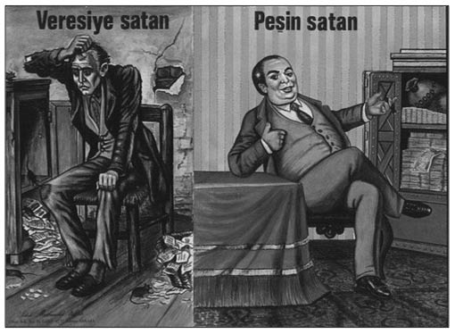

P-R
Peşin Veren, Veresiye Satan (Türkiye’nin yaşadığı yüksek enflasyon dönemini anlatan fotoğraf):
Türkiye’de, 10 yıl öncesine kadar yüksek enflasyon ortamı ve talep fazlası nedeniyle veresiye satan vade farkı nedeniyle ciddi şekilde zarara uğruyordu. Peşin satmakta direnen, malını satmakta zorlandığı gibi, sattığında da aynı malı yerine koyamadığı için giderek sıfırı tüketiyordu. “Peşin Veren, Veresiye Satan” fotoğrafı bütün bu durumu simgeliyordu ve tüm Türkiye’ye yayılmıştı. Veresiye dışında satış yapamayan perişan dükkân sahibinin bir tarafta, peşin sattığı için mutlu ve kendinden emin duran esnafın diğer tarafta olduğu o fotoğraf karesi uzun süre hafızalardan silinemedi. Fakat işin komik tarafı aradan yıllar geçtikten sonra, ekonomide bugün geldiğimiz noktaya baktığımızda yapılan satışların neredeyse tamamının kredi kartıyla, yani bir anlamda veresiyeyle gerçekleştirildiğini görüyoruz. Bu resimde başlıkların yerinin değişmesi gerekiyor.
Nostaljik bir fotoğraf olarak, “ağlayan çocuk” resmiyle birlikte sahaflarda bulmak hâlâ mümkündür.

“Peşin Veren, Veresiye Satan” fotoğrafı, Türkiye’nin bir dönemini simgeler. Veresiye dışında satış yapamayan perişan dükkân sahibi bir tarafta, peşin sattığı için mutlu
ve kendinden emin duran esnaf diğer tarafta.
Plan mı, Pilav mı? (Planlama anlayışını hafife alan zihniyet): 1965 Seçimleri öncesi ülkede “Plan ve Pilav” tartışmaları, siyasi propaganda sürecine bir kez daha damgasını vuruyordu. Bu tartışma CHP ile AP arasında yaşanıyordu. CHP, ülke kalkınmasının planlamayla gerçekleşeceğine inanırken, AP ise planlamaya karşı olmadığını, ancak konunun çok da abartılmaması gerektiğine işaret ederek somut şeylerin insan hayatındaki önemine vurgu yapmaya çalışıyordu. Her ne kadar Türkiye kamuoyu bugün “Plan mı Pilav mı?” ikilemini dönemin Adalet Partisi lideri Süleyman Demirel ile hatırlasa da aslında bunu ilk söyleyen o değildi. Bazıları da bu ikilemi ifade eden siyasinin DP lideri Adnan Menderes olduğunu zanneder. Oysaki “Plan değil Pilav” deyimini Demokrat Parti lideri Menderes de söylememişti. Bunu söyleyen Maliye Müfettişi Hüsnü Bengi’ydi. Bürokrat-politikacı-yazar Cahit Kayra, kitabında Bengi’nin amacını şu sözlerle anlatır:
“ ‘Plan değil Pilav’ deyimini Demokrat Parti lideri değil, Maliye müfettişi Hüsnü Bengi koymuştur. Maksadı bizim 1948’de Marshall Yardımı’ndan pay alabilmek için Paris’e götürdüğümüz Türkiye Ekonomik Kalkınma Planı’nı betimlemekti. Şevket Süreyya tarafından hazırlanan III. Sanayi Planı’nın Amerikalılarca kabul edilmeyeceği anlaşılınca onun yerine Paris’e getirilen (ve pek ciddi olmayan plan) için Hüsnü Bey böyle bir espri yapmıştı.” (Kayra, 1995, s.142)
Popüler Ekonomi Gazeteciliği (Günlük ekonomi haberleri): 1980’lerde Turgut Özal’ın ekonomiyi liberalleştirmesi, bir anlamda sokağın diliyle ekonomi haberciliği yapmanın önünü açtı. Necati Doğru “fileli, sepetli, enflasyon canavarlı” haberlerle popüler ekonomi gazeteciliğini başlattı. Bir yandan da Nezih Demirkent’in KOBİ ve Anadolu odaklı Dünya gazetesi devreye girdi. Fakat asıl kırılma, ulusal basının ekonomiye daha fazla ilgi duymasıyla başladı.
Rumeli Demiryolları Olayı (Memurlara rüşvet verilmesi geleneğini başlatan yolsuzluk): Tanzimat dönemi yöneticileri Avrupa’yla yakınlaşmanın demiryollarıyla sağlanacağının farkına varmıştı. İstanbul’dan Bal-kanlar’a uzanacak bir demiryolunun, aynı zamanda askerî ve ekonomik faydaları da olacaktı. 1869’da Macar kökenli Yahudi Banker Baron Maurice de Hirsch, 2 bin kilometre olarak düşünülen hattın yapımına talip oldu. O andan itibaren de, tabiri caizse “dünya çapında bir ihale yolsuzluğunun çarkları” işlemeye başladı. Bayındırlık Bakanı Garabet Artin Davut Paşa’nın, Paris’te Hirsch’le imzaladığı sözleşme, hükümet cephesinde tartışmalara neden oldu. Kendisinden açıklama istendiğinde Davut Paşa’nın sözleşme hükümleri hakkında fazla bilgili olmadığı ve metnin, Hirsch’in önerdiği bir avukata yaptırıldığı anlaşıldı. Girişeceği işten büyük bir rant ümit eden Baron Hirsch, rüşvet çarkını döndürmeye Davut Paşa ile başlamıştı. Konunun Vekiller Meclisi’nde tartışılması üzerine, Şirvanzade Rüştü Paşa, inşaatın devletin kendi kaynaklarıyla yapılmasını önerdi. Ancak Osmanlı’nın Balkanlar’da demiryolu inşa etmesine sıcak bakmayan Ruslar, bin bir türlü entrikayla buna engel olabilirdi. Rusya engelini aşmanın tek yolu, Avrupa’nın büyük devletlerinin desteğini almaktı. Eğer Avusturyalı ya da Fransız bir mali grup işe karışırsa, yatırımcıların devletlerinden alacakları destek Rusya’nın muhalefetini engelleyebilirdi. Birkaç düzenlemenin ardından Rumeli Demiryolları’nın yapımı ve işletme imtiyazı, 99 yıl süreyle Avusturya tebaasından Baron Hirsch’e verildi. Rumeli Demiryolları imtiyazını aldığında hiçbir sermayesi olmayan ve iflas etmiş bir banker konumunda bulunan Hirsch, bu işten meşru ve gayri meşru olarak kazandığı 350 milyon frank gibi muazzam bir meblağ ile bir anda Avrupa’nın sayılı zenginleri arasına girmişti. Bu olay ticari çevrelerde “yüzyılın vurgunu” olarak değerlendirilecekti. Ünlü tarihçi ve devlet adamı Ahmet Cevdet Paşa’ya göre de, memurlara rüşvet verilmesi “geleneğini” Osmanlı’ya Baron Hirsch’in bulaştırmıştı. Hirsch öldüğünde arkasında 800 milyon Fransız frangı tutarında bir miras bıraktı. Osmanlı Devleti, bazı devlet adamlarının aldığı rüşvetler sonucunda, hazinesine ağır bir yük getiren önemli bir borcun altına girdi. Rumeli Demiryolları Osmanlı’ya 2 milyar 800 milyon Fransız frangına mal oldu. 1954’te en son taksiti ödenen “Birleştirilmiş Osmanlı Borçları” arasında, Rumeli Demiryolları’nın borcu da bulunuyordu.
Rüşvetin Belgesi Olur mu? (Selim Edes’in meşhur sözü): Engin Civan Rüşvet Skandalı, Emlakbank Eski Genel Müdürü ve Özal’ın prenslerinden Engin Civan’ın 19 Eylül 1994’te Mecidiyeköy’de ünlü baba Alaattin Çakı-cı’nın tetikçisi Davut Yıldız tarafından vurulmasıyla ortaya çıktı. Cumhurbaşkanı Özal’ın en yakınında bulunan insanlar arasında başlayan para savaşında, Selim Edes ile Engin Civan’ın 5 milyon doları paylaşılamamış, bir yanı Dündar Kılıç ve kızı Uğur Kılıç ile Alaattin Çakıcı ve Tevfik Ağansoy’a diğer yanı Özal Ailesi’ne dek uzanan karmaşık ilişkiler ağı ortaya çıkmıştı.
Civan’ın vurulma olayının ardında Özal Ailesi’ne yakın iş adamı Selim Edes vardı. Edes, Engin Civan’a Emlak Bankası Genel Müdürlüğü döneminde, kredi sözü karşılığında 5 milyon dolar rüşvet ödemişti. Fakat krediyi alamadığı için parasını geri istiyor, Civan ise parayı geri ödememekte direniyordu. İddialara göre bu aşamada Özal’ın eşi Semra Özal devreye girip Selim Edes’i arayarak Dündar Kılıç’ın kendisini beklediğini ve alacak işinin çözüleceğini söylemişti. Dündar Kılıç’ın Selimpaşa’daki yazlığında yapılan toplantıya Civan ve Edes katılmıştı. Toplantıda, ısrarla böyle bir paranın alınmadığını söyleyen Civan, Edes’e, “O zaman belgesini göster,” demesi üzerine Edes “Rüşvetin belgesi olur mu?” yanıtını vermişti. Bu görüşmeden herhangi bir sonuç çıkmayınca, ünlü kabadayı Alaattin Çakıcı devreye girmiş ve Çakıcı’nın adamı Davut Yıldız, Civan’ı yaralamıştı.